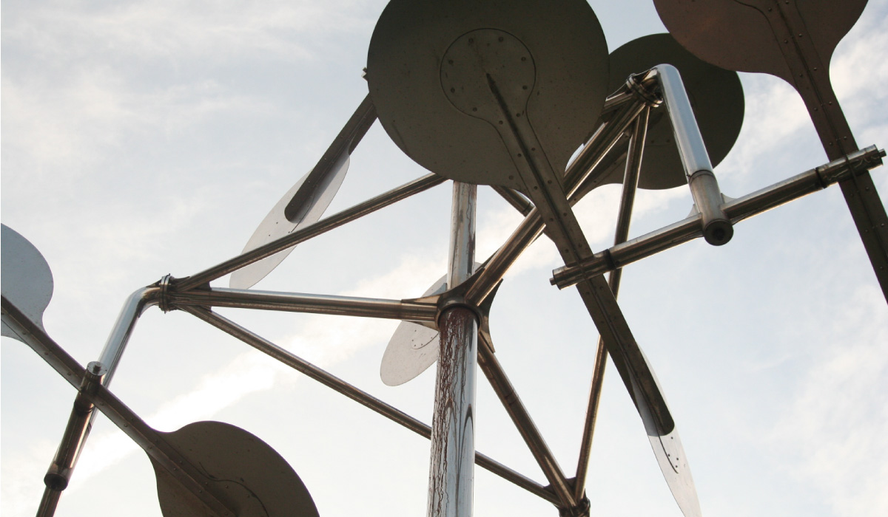
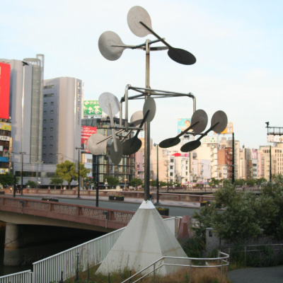
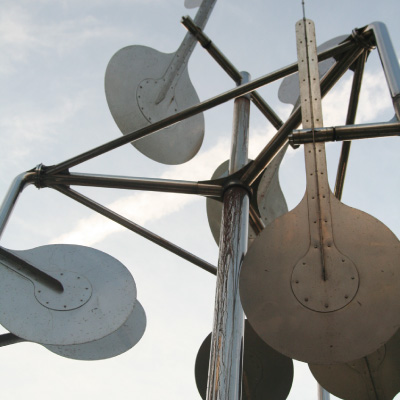
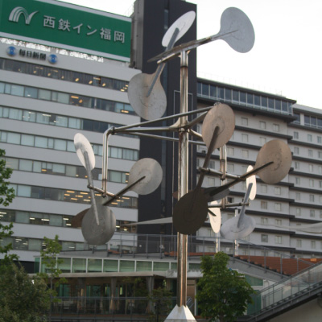
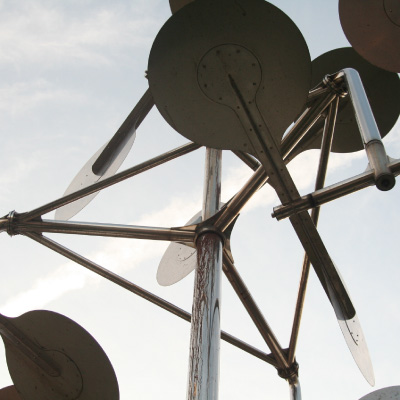
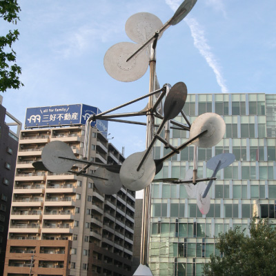

新宮 晋
    
中洲の水上公園に建つ作品。福岡市が1983年から始めた「彫刻のあるまちづくり」プロジェクトの記念す
べき第1号作品。「大陸からの風を受けて回転し、光を拡散する」というテーマのもとに制作された。この
作品の特徴はやはり「動く」という点だろう。船のオールのようなものが風を受け動き続ける。日差しが強
い日は、銀色の表面に光が反射し、周り一体を巻き込んだ光のアートになる。光と風を感じる作品。作者の
新宮晋氏は風車のような風を受けて動くアート作品を多く制作した。自然と芸術の融合を感じられる作品。